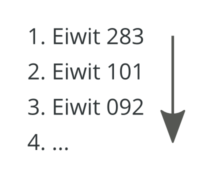

Sequence-based learning algorithms
for understanding and improving
protein characteristics
B.A. van den Berg
Overzicht
Sequence-based learning algorithms
for understanding and improving
protein characteristics
Eiwitten

Belangrijke bouwstenen in een cel

Grafische weergave doorsnede Escherichia coli - door David Goodsell
Macromolekulen
Kettingen opgebouwd uit 20 verschillende aminozuren


Opgevouwen kettingen

Centrale Dogma
DNA RNA Eiwit

Enzymen
Eiwitten met veel praktische toepassingen

Phosphoglucose Isomerase - door David Goodsell
Enzymen spelen een belanrijke rol bij industriële productie
Voedsel, drank, textiel, leer


Wasmiddelen
Enzymen knippen het vuil en vet op je kleding kapot


Papier en pulp
Enzyme bleken, verwijderen inkt, verbeteren structuur

Tweede generatie biobrandstoffen
Enzyme zetten biomassa om in ethanol


Schimmels
Kleine enzymfabrieken

Aspergillus niger - http://fungi.myspecies.info
Schimmels secreteren veel enzymen
Om voedsel af te kunnen breken buiten de cell

Fermentor
De optimale omgeving creëren voor maximale enzymproductie

Enzyme optimalizatie
Enzyme A geeft een hogere concentratie dan enzyme B
waarom?
Classificeren I
Onderscheid maken tussen appels en peren


Meten is weten

Nog meer meten is nog meer weten

Classificator trainen

Classificator

Classificator testen

Classificeren II
Onderscheid maken tussen enzymen met hoge en lage productieniveau's in Aspergillus niger
Eiwitstructuur-eigenschappen
Lastig door beperkte beschikbaarheid structuur data

Eiwitsequentie
Die hebben we in overvloed en bevatten ook informatie
>An11g03200 NDYRPSYHFTPDQYWMNEPNGLIKIGSTWHLFFQHNPTANVWGNICWGHATSTDLMHWAHKPTAIADENG VEAFTGTAYYDPNNASGLGDSANPPYLAWFTGYTVSSQTQDQRLAFSVDNGATWTKFQGNPIISTSQEAP HDITGGLESRDPKVFFHRQSGNWIMVLAHGGQDKLSFWTSADTINWTWQSDLKSTSINGLSSDITGWEVP DMFELPVEGTEETTWVVMMTPAEGSPAGGNGVLAITGSFDGKSFTADPVDASTMWLNNGRDFDGALSWVN VPASDGRRIIAAVMNSYGSNPPTTTWKGMLSFPRTLSLKKVGTQQHFVQQPITELDTISTSLQTLENQTI TPGQTLLSSIRGTALDVRVAFYPDAGSVLSLAVRKGASEQTVIKYTQSDATLSVDRTESGDTSYDPAASG VHTAKLEEDDTGLVSIRVLVDTCSVEVFGGQGEAVISDLIFPSDSSDGLALEVTGGNAVLQSVDVRSVSL E
Eiwitsequentie-eigenschappen
Bijvoorbeeld de aminozuurverdeling binnen in eiwit

Eiwitproductie voorspellen
Eiwitten selecteren die potentieel geschikt zijn voor industriële productie
Belangrijke eigenschappen leren
Welke aminozuren hebben positieve en negative invloed op het productieniveau van het enzym

Omgekeerd classificeren
Een duwtje naar de andere kant van de beslissingsgrens

Eiwit ontwerp
8 enzymen herontwerpen met 5 tot 45 aangepaste aminozuren


Esterase - Inulinase
Lab resultaten
Tot tienvoudige extracellulaire concentraties